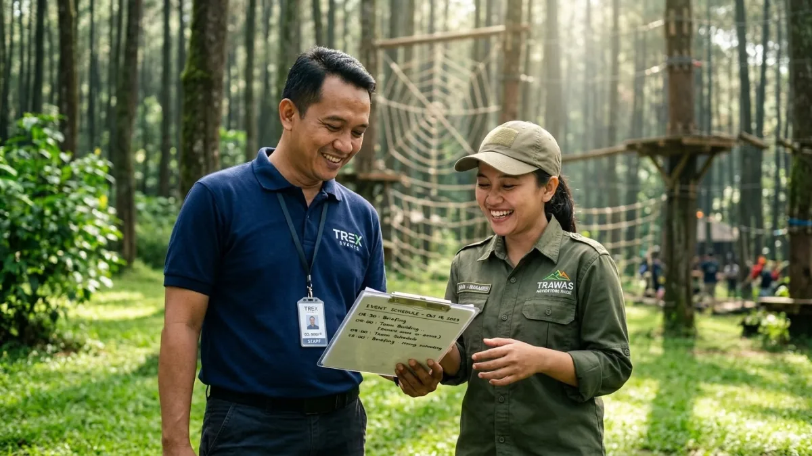

Rute outbound menggunakan bus pariwisata menuju Trawas umumnya melewati jalur berkelok dan menanjak khas kawasan perbukitan Mojokerto, sehingga persiapan teknis dan koordinasi dengan venue menjadi kunci kelancaran acara.
DAFTAR ISI
1. Bagaimana Gambaran Umum Rute Menuju Venue Outbound di Trawas?
Rute menuju venue outbound di Trawas umumnya dimulai dari jalur utama Mojokerto, kemudian berlanjut ke jalan yang mulai menanjak dan berkelok seiring mendekati kawasan perbukitan lereng Gunung Penanggungan dan Welirang.
Kondisi jalan menuju kawasan ini bervariasi, mulai dari jalan kabupaten yang cukup lebar hingga jalan desa yang lebih sempit menuju beberapa venue outbound tertentu.
Karena itu, sebelum menetapkan bus yang akan digunakan, penting untuk memastikan lebar dan kondisi jalan menuju titik akhir venue yang dituju.
Waktu tempuh menuju Trawas dapat berbeda tergantung titik keberangkatan dan kondisi lalu lintas, sehingga panitia disarankan menghitung estimasi waktu perjalanan dengan tambahan waktu cadangan, terutama jika keberangkatan dilakukan pada jam-jam sibuk.
2. Apa Saja Persiapan Penting Sebelum Hari Keberangkatan Outbound?
Persiapan penting sebelum hari keberangkatan outbound meliputi penyusunan daftar peserta, penentuan titik kumpul, dan pengecekan ulang jadwal bersama penyedia bus pariwisata.
Beberapa hal yang perlu disiapkan panitia:
- Susun daftar peserta lengkap beserta kontak darurat masing-masing.
- Tentukan titik kumpul yang mudah diakses seluruh peserta pada pagi hari keberangkatan.
- Konfirmasi ulang jadwal, jumlah bus, dan nomor kendaraan kepada penyedia sehari sebelum keberangkatan.
- Siapkan perlengkapan outbound seperti alat permainan, sound system portable, dan kotak P3K.
- Informasikan kepada seluruh peserta mengenai perkiraan waktu tempuh dan barang bawaan yang disarankan mengingat suhu udara Trawas yang lebih sejuk.
Menyiapkan daftar periksa tertulis membantu panitia memastikan tidak ada aspek penting yang terlewat menjelang hari pelaksanaan.

Koordinasi antara panitia dan pengelola venue outbound di Trawas. (Ilustrasi)3. Bagaimana Cara Berkoordinasi dengan Pengelola Venue Outbound di Trawas?
Cara berkoordinasi dengan pengelola venue outbound di Trawas adalah dengan mengonfirmasi akses jalan untuk bus, titik penurunan penumpang, dan jadwal kegiatan sebelum hari pelaksanaan.
Beberapa poin yang perlu dikomunikasikan dengan pengelola venue:
- Konfirmasi apakah akses jalan menuju venue dapat dilalui bus besar atau hanya bus sedang.
- Tentukan titik penurunan dan penjemputan peserta yang paling efisien di area venue.
- Sinkronkan jadwal kedatangan bus dengan susunan acara outbound yang telah disusun panitia.
- Tanyakan ketersediaan area parkir bus selama kegiatan berlangsung di venue.
- Diskusikan rencana cadangan apabila terjadi perubahan cuaca yang memengaruhi kondisi jalan menuju venue.
Koordinasi yang dilakukan lebih awal membantu mengurangi risiko keterlambatan maupun kebingungan teknis saat rombongan tiba di lokasi.
4. Apa yang Perlu Diperhatikan Terkait Cuaca dan Kondisi Jalan Menuju Trawas?
Kondisi cuaca di kawasan Trawas dapat berubah cukup cepat karena berada di dataran tinggi, sehingga jadwal keberangkatan pagi hari dan kesiapan sopir menghadapi jalan basah menjadi hal yang perlu diperhatikan.
Beberapa langkah antisipasi yang dapat dilakukan:
- Memilih jadwal keberangkatan pagi hari untuk menghindari potensi kabut atau hujan yang lebih sering muncul menjelang sore.
- Menyiapkan jas hujan atau perlengkapan tambahan bagi peserta mengingat suhu udara yang lebih sejuk dibanding dataran rendah.
- Mengingatkan sopir untuk mengurangi kecepatan pada jalur menurun yang basah akibat hujan.
- Menyiapkan komunikasi cadangan dengan pengelola venue jika terjadi perubahan jadwal akibat cuaca.
Dengan antisipasi ini, risiko gangguan perjalanan akibat cuaca dapat diminimalkan tanpa mengurangi kenyamanan peserta selama acara outbound berlangsung.
Kesimpulan
Merencanakan rute dan persiapan teknis outbound ke Trawas sebaiknya mencakup pengecekan kondisi jalan, koordinasi dengan pengelola venue, serta antisipasi cuaca dataran tinggi.
Dengan persiapan yang matang, perjalanan rombongan menggunakan bus pariwisata dapat berjalan lebih lancar dan aman.